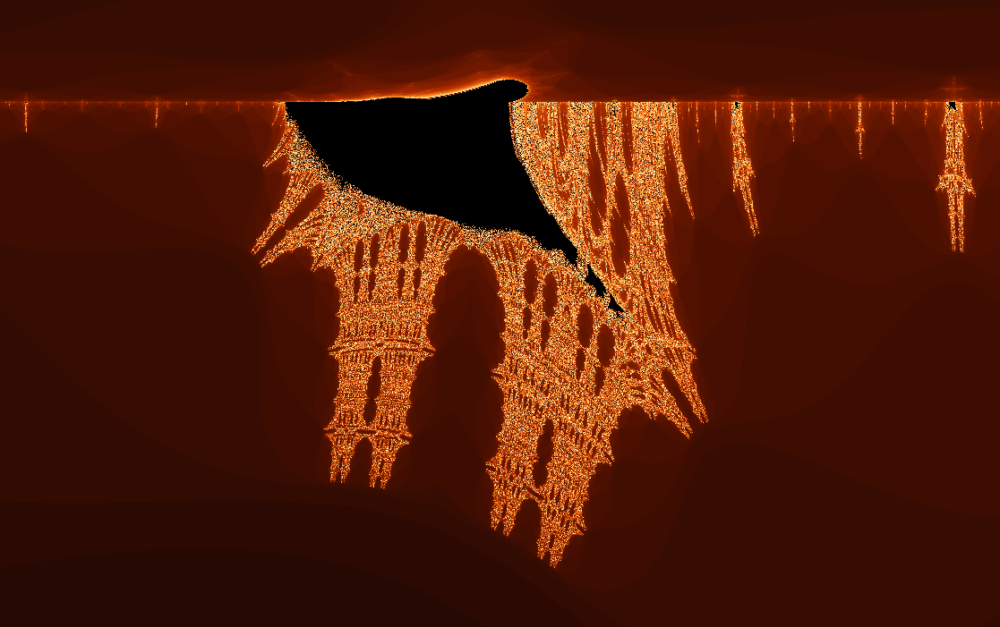
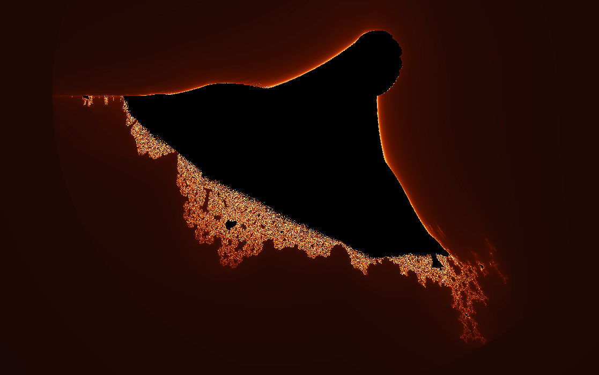
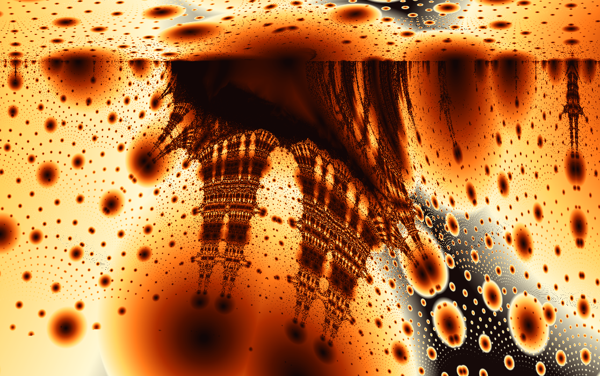
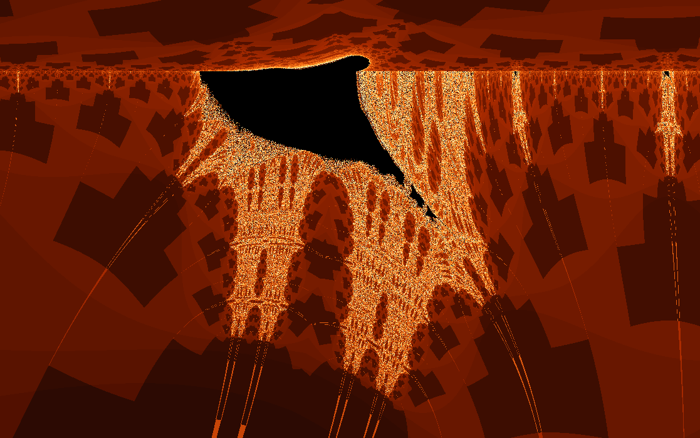
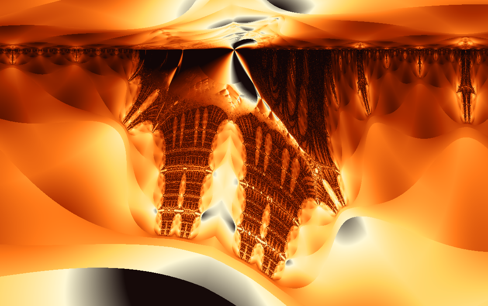
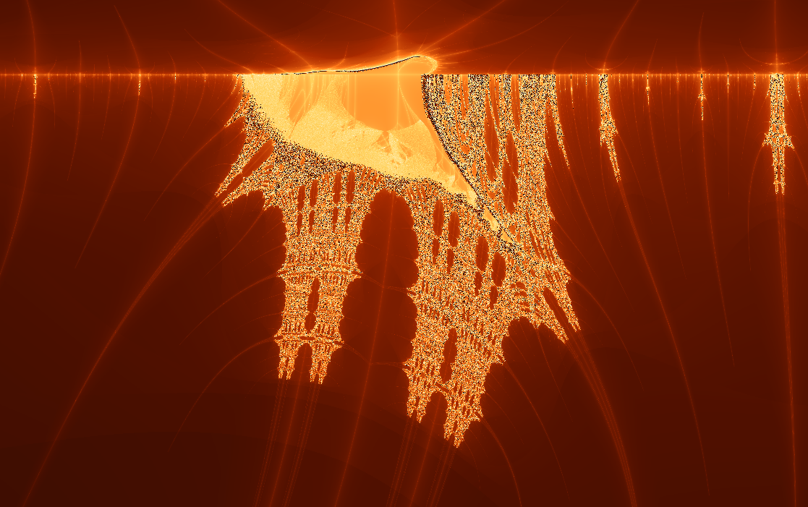

Fractal gallery
Burning Ship
A Mandelbrot relative with its sails folded into sharp, smoky symmetry.
The Burning Ship starts with the familiar escape-time ritual, then changes one gesture: before squaring, it reflects the orbit into the first quadrant. That small fold turns round bulbs into masts, decks, rigging, and cliffs.

What to try first
Start wide. Look for the dark hull and the towers rising from it. The silhouette is less friendly than the Mandelbrot set, but it rewards slow zooms.
Zoom along the upper edge. The most dramatic detail lives in the boundary: stacked chimneys, spray, and fine filaments.
Turn on orbit display. Move the selector near a sharp edge and watch how the reflected orbit bounces between mirrored halves.
Coloring lenses
The set stays the same, but each rendering method asks a different question about the orbit.

Gaussian integer
Measures how closely escaping orbits pass near the complex integer lattice.
Apply in wxChaos

Triangle inequality
Turns relationships inside the orbit into layered, topographic texture.
Apply in wxChaos
Orbit traps
Colors points by how closely their orbits pass near the real and imaginary axes.
Apply in wxChaosMathematical notes
The formula behind the fold
The Burning Ship uses \(z_0=0\) and \(z_{n+1}=(|\operatorname{Re}(z_n)|+i|\operatorname{Im}(z_n)|)^2+c\). The absolute values reflect every orbit step before the square is applied. Because complex conjugation and absolute values break complex differentiability, the geometry behaves differently from analytic quadratic maps such as Mandelbrot.